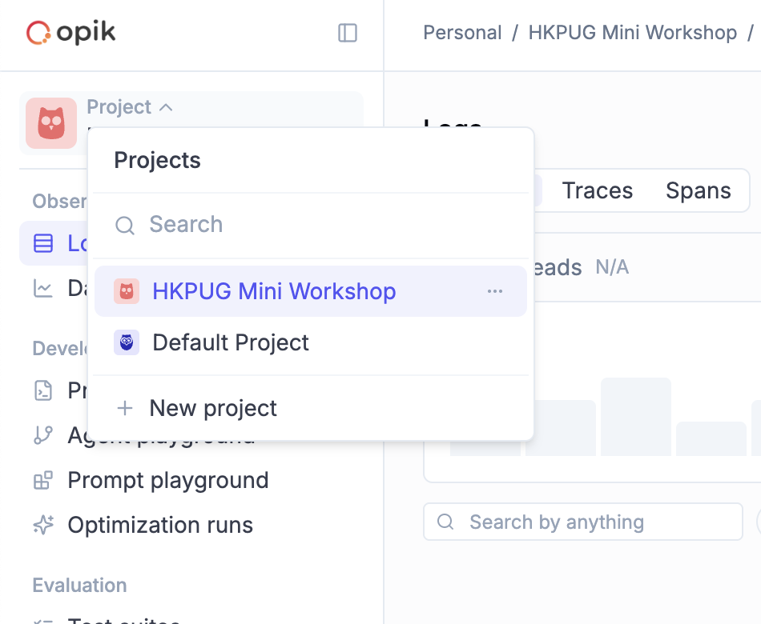
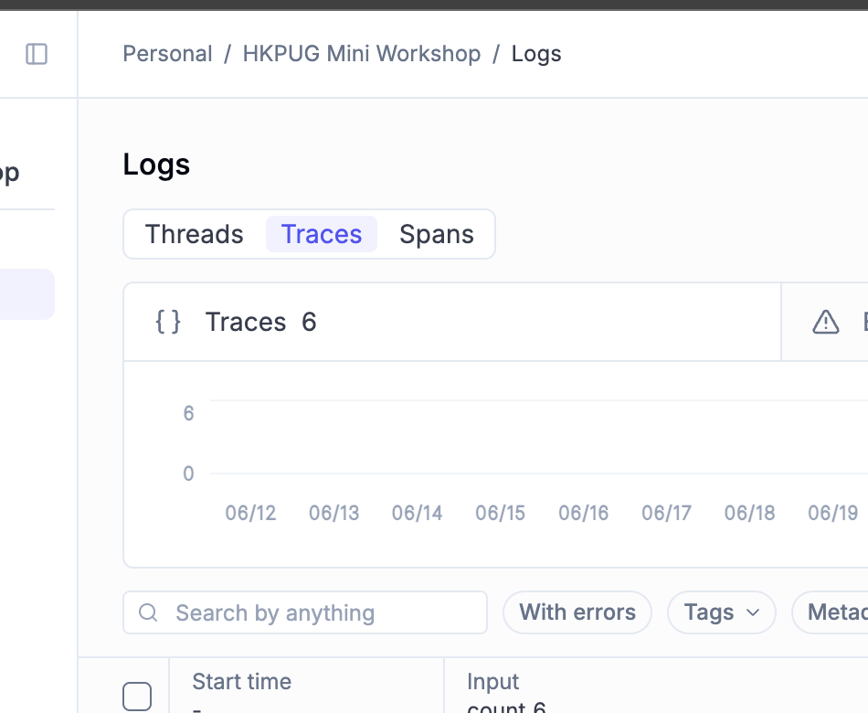

Trace debugging lab
Learn Opik with six flagged runs.
Six support-agent runs were flagged before release. Load the existing mini-workshop data into local Opik, follow the spans and Experiments, check the small Python codebase, and compare your findings with the answer key.
- 1Load the data
- 2Inspect six cases
- 3Check the answers
Load the copied workshop data
The download contains the original six traces, 43 spans, feedback scores, Dataset and Experiments records, questions, answers, and Python case files from the HKPUG mini workshop.
Start local Opik
git clone https://github.com/comet-ml/opik.git
cd opik
./opik.shOn Windows, run powershell -ExecutionPolicy ByPass -c ".\opik.ps1" from the cloned Opik repository.
Extract and import
unzip hkpug-opik-mini-workshop-onboarding.zip
cd hkpug-opik-mini-workshop-onboarding
hkpug-opik-helper load \
--feedback opik \
--opik-url http://localhost:5173/api \
--workspace defaultUse the latest hkpug-opik-helper release. The command imports project HKPUG Mini Workshop Onboarding.
SHA-256 ab59ef097dbd5626546f7c56440a8a5c5ba3832798379a9ebcdc391c3b906909
Start in the workshop traces
Opik may open a default project or a different Logs tab. Make these two selections before investigating Case 001.
-

1 Choose HKPUG Mini Workshop OnboardingOpen the Project menu and select the imported workshop project. Do not use Default Project. -

2 Open Logs, then TracesSelect Traces, not Threads or Spans, to find the six workshop cases.
Investigate the six cases
Most answers are visible in Opik. Open the extracted code/ directory only when a question carries the Code label. Reveal answers after you have inspected the evidence.
001Policy evidence does not match customerWrong policy retrieval / 4 questions
BA flag: The support answer says an activated Starter customer can receive a 30-day refund. BA suspects the answer used the wrong policy.
- OpikWhich short token best describes what the agent answered?Choose one:
eligible-30-day-refund,service-credit-only,not-refundable. - OpikWhich Opik span shows the policy documents retrieved for the answer?
- OpikWhich retrieved document should not have been used for an HK Starter customer?
- CodeIn
code/shared/fixtures.py, which token describes the correct HK Starter policy for activated seats?Choose one:activated-refundable,activated-not-refundable,pro-policy-applies.
Reveal Case 001 answers
- A
eligible-30-day-refund- B
001.retrieve_policy- C
refund-hk-pro-2026- D
activated-not-refundable
Manager decision: Do not approve without fixing retrieval filters.
002Slow run with broad retrieval fallbackLatency and evidence quality / 4 questions
BA flag: This refund run was much slower than nearby runs. BA wants to know whether the answer is safe or whether the fallback path changed the evidence.
- OpikIgnoring the root orchestration span, which retrieval span took the longest?
- OpikWhich fallback retrieval span ran after the primary retrieval problem?
- OpikDid the fallback use stronger or weaker evidence than the primary intended filter?Choose one:
stronger-evidence,weaker-evidence. - OpikShould the manager approve this run without review?Choose one:
approve,manual-review,reject.
Reveal Case 002 answers
- A
002.retrieve_policy_primary- B
002.retrieve_policy_fallback- C
weaker-evidence- D
manual-review
Manager decision: Manual review before release.
003Tool result is confident but input is wrongTool-call argument mapping / 4 questions
BA flag: The refund calculator returned a confident "eligible" result, but the customer complained that they are on Starter, not Pro.
- OpikWhich span first shows the parsed request product as
starterbefore the tool call?Choose one:003.parse_refund_request,003.map_tool_arguments,003.compose_tool_answer. - OpikWhich calculator span receives
product: proin its input? - CodeIn
code/cases/case_003_tool_argument.py, what short token names the hard-coded argument or mapping causing the tool to receiveproduct="pro"?Choose one:product=pro,product=starter,region=hk. - OpikWhat should the manager conclude: tool failure, mapping failure, or model failure?Choose one:
tool-failure,mapping-failure,model-failure.
Reveal Case 003 answers
- A
003.parse_refund_request- B
003.calculate_refund_eligibility- C
product=pro- D
mapping-failure
Manager decision: Do not approve until tool argument mapping is fixed.
004Streamed draft was persisted after cutoffIncomplete generation and persistence / 4 questions
BA flag: The ticket summary looks incomplete. BA wants to know whether this was a model quality issue or an application persistence issue.
- OpikWhich span shows the streamed model output and finish reason?
- OpikWhat finish reason did the model return?
- OpikWhich span persisted the answer despite the incomplete stream?
- CodeIn
code/cases/case_004_stream_cutoff.py, which missing check should block saving?Choose one:finish-reason-check,ticket-id-check,region-check.
Reveal Case 004 answers
- A
004.stream_policy_summary- B
length- C
004.persist_customer_answer- D
finish-reason-check
Manager decision: Do not approve until incomplete streams are blocked from persistence.
005Issue summary contains unsafe comment textUntrusted retrieved context / 4 questions
BA flag: The GitHub issue summary includes an internal debug token and tells support to bypass approval.
- OpikWhich retrieved item contains the unsafe instruction?
- OpikWhich span shows that untrusted text was included in the prompt without a boundary?
- OpikWhich span shows the guardrail result?
- OpikWhat should the manager decide for this summary?Choose one:
approve,block-or-rewrite,manual-review-only.
Reveal Case 005 answers
- A
issue-4812-attacker-comment- B
005.build_issue_prompt- C
005.postprocess_guardrail- D
block-or-rewrite
Manager decision: Block the summary and fix untrusted-comment prompt boundaries.
006Release candidate looks good but gate is weakExperiment metrics and selection / 4 questions
BA flag: The app selected a prompt version for release, but BA believes another candidate is safer.
- OpikIn Logs, which prompt version did the app select?
- ExperimentsIn Experiments, which prompt version should ship based on faithfulness and release-gate scores?
- ExperimentsWhich metric made the selected candidate look attractive?
- CodeIn
code/cases/case_006_release_gate.py, what short token names the missing release selection condition?Choose one:faithfulness-expert-gate,cost-only-gate,answer-relevance-gate.
Reveal Case 006 answers
- A
prompt-v2- B
prompt-v3- C
answer_relevance- D
faithfulness-expert-gate
Manager decision: Do not ship prompt-v2; ship prompt-v3 after strengthening the gate.